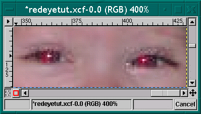
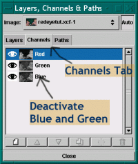
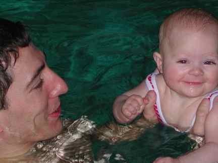

It used to be that the photos with red eye weren't really worth fixing as only cheesy cameras had the flash built in and underneath the red eyes was a crappy photo. Well, welcome to the future when you can get a pretty good image from a camera with the flash built in. They do not have a button that works to prevent this yet, so don't even try it. The best way to fix red eye on photos is to have those intense people look at the photographers shoulder. The cause of red eye is the flash reflecting from the back of the eye and into the lens. So, until this lovely child is able to understand "look at my shoulder" it is good to know that red eye can be fixed, somewhat. I learned the following method from tigert while lurking on the irc late late one night.

I zoomed in on the image, 4:1 ratio, as this is almost pixel by pixel work. I ended up using the 5 x 5 fuzzy brush that came with the GIMP tarball. As usual, your choice depends on the resolution of your image. A fuzzy brush is highly recommended. On this web sized image, the 3 x 3 fuzzy brush didn't work fast enough. As always, you can Edit-->Undo until you make the right selections.

A long time ago, someone suggested on the gimp-user list that the Layers, Channels and Paths Dialog always remain open while you use GIMP.
Some three years later, I still follow and give this advice. So, if your Layers,Channels and Paths Dialog is not open, open it and leave
it open. Select the Channels Tab. Deactivate the Green and Blue Channels by clicking to the right of the thumbnails in the dialog window.
The image should still look like the screenshot of the close up in step 1. If it looks all red, you have just turned the view of the color off.
(burning the red eye area will not work if the Layers,Channels and Paths dialog is set up that way, I happen to know).

Make certain you have a good brush selected (for this image I used the 5 x 5 fuzzy) Then select the Dodge and Burn Tool. dodge or burn tool
Double click on the button to get the Tool Options dialog. My dialog defaults to dodge and midtones, for this project, choose burn and hightlights (as illustrated).
Touch all of the red in the eyes with the burn tool. I think that I used the burn tool on the midtones just a little bit also. The GIMP doesn't have
a magic button to fix red eyes with, but it has the tools. It has been my experience that each image is slightly different and I sort of like the control
that GIMP gives you ...
tigert warned that this method can leave the white spots in the eyes slightly green. I have found this to be true, however so far it hasn't been enough green
to worry about. Given a photo where the green will make a difference, you can use the same tool combination on the green channel, just move the opacity slider
to a smaller percentage. Edit-->Undo until you get it right.

... looking so much better!
The very best fix, of course would be to prevent it from happening. Due to the nature of the problem, my guess is that it will be the same people over and over
again with this problem. Some personalities have no problem looking deeply into the camera lens (like this beautiful baby for instance) and maintaining the gaze
through the flash. My guess is that as soon as these people know what is going on, they can fix it themselves.
Other personalities have other portrait problems. There is a small handful of people who have no problem looking into the camera lens, but anticipate the flash
and blink at the wrong moment. This causes the portrait to look like the object is starting to sneeze. (this is what happens to me) If you know of a method to
prevent this, please email me.

What a cute baby. This is Maurits and his baby. He is one of a growing list of developers that are changing their babies while working on GIMP. I watched work on WinGIMP occuring between diaper changings and feedings also. *chuckle*
The original tutorial can be found here